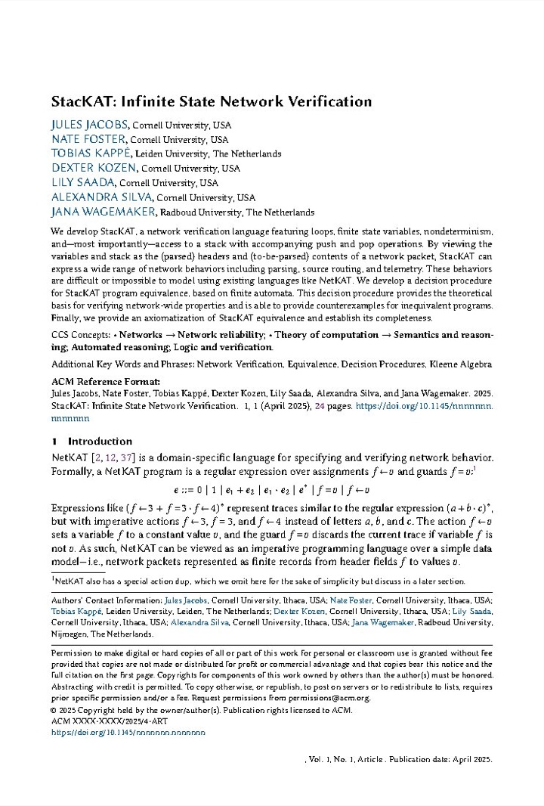

Network behaviors such as parsing, source routing and telemetry are difficult or impossible to model in NetKAT. StacKAT adds a stack with push and pop, standing for a packet's contents still to be parsed. The paper gives a decision procedure for StacKAT program equivalence based on finite automata, which produces counterexamples, and a complete axiomatization.

Read the paperWe develop StacKAT, a network verification language featuring loops, finite state variables, nondeterminism, and—most importantly—access to a stack with accompanying push and pop operations. By viewing the variables and stack as the (parsed) headers and (to-be-parsed) contents of a network packet, StacKAT can express a wide range of network behaviors including parsing, source routing, and telemetry. These behaviors are difficult or impossible to model using existing languages like NetKAT. We develop a decision procedure for StacKAT program equivalence, based on finite automata. This decision procedure provides the theoretical basis for verifying network-wide properties and is able to provide counterexamples for inequivalent programs. Finally, we provide an axiomatization of StacKAT equivalence and establish its completeness.
@article{jacobs2025stackat,
title = {StacKAT: Infinite State Network Verification},
volume = {9},
ISSN = {2475-1421},
url = {https://doi.org/10.1145/3729257},
DOI = {10.1145/3729257},
number = {PLDI},
journal = {Proceedings of the ACM on Programming Languages},
publisher = {Association for Computing Machinery (ACM)},
author = {Jacobs, Jules and Foster, Nate and Kappé, Tobias and Kozen, Dexter and Saada, Lily and Silva, Alexandra and Wagemaker, Jana},
year = {2025},
month = June,
pages = {277--300}
}